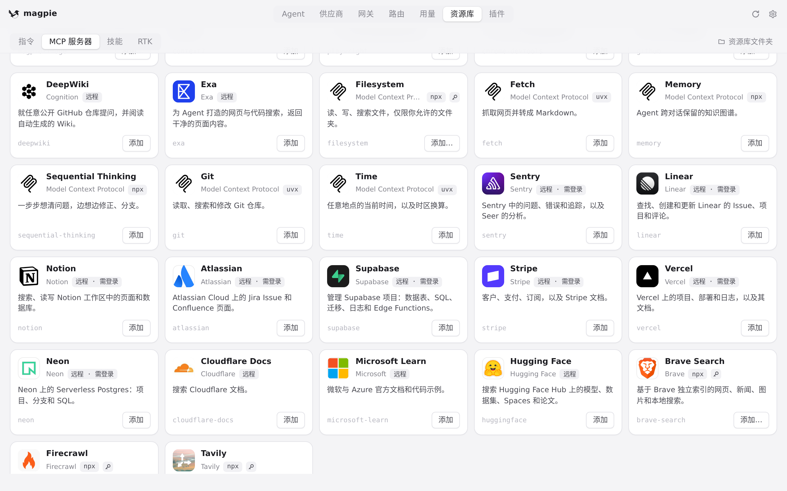
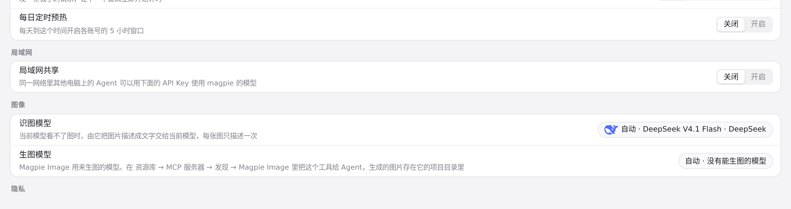
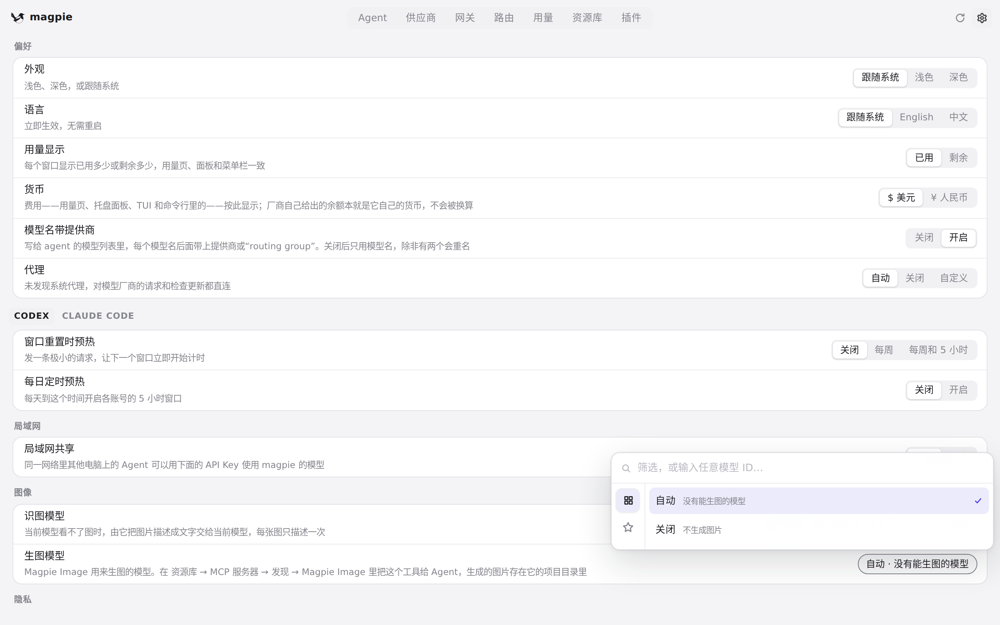
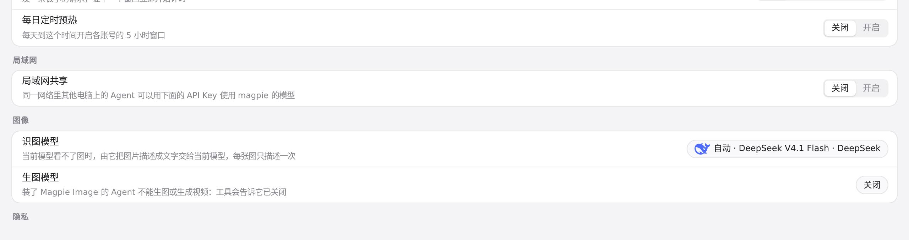

#360 界面预览
commit c3c765f · 回到 PR · 这个 PR 让 Grok 订阅（SuperGrok）经网关用 Imagine API 生图和生视频，并给 magpie 自己的 Magpie Image MCP 服务器加了 generate_video 工具；界面上的改动只有文字：资源库里 Magpie Image 的说明（含中文翻译）加上了短视频，设置 → 图像 里生图关闭时的说明改成「不能生图或生成视频」。
红线是鼠标走过的轨迹，红色圆环是一次点击；底部文字是这一步在做什么。空格暂停，← → 逐段查看。

资源库里 Magpie Image 的说明 · 资源库 → MCP 服务器：Magpie Image 的说明文字

生图关闭时的说明 · 设置 → 图像：生图模型一行

生图关闭时的说明 · 「生图模型」展开的选项列表

生图关闭时的说明 · 选择「不生成图片」后「生图模型」下面的说明